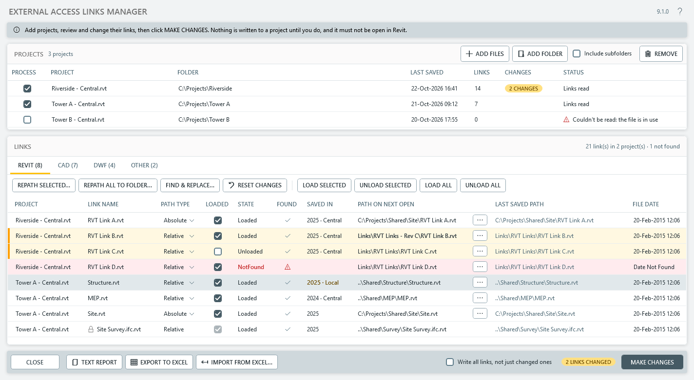
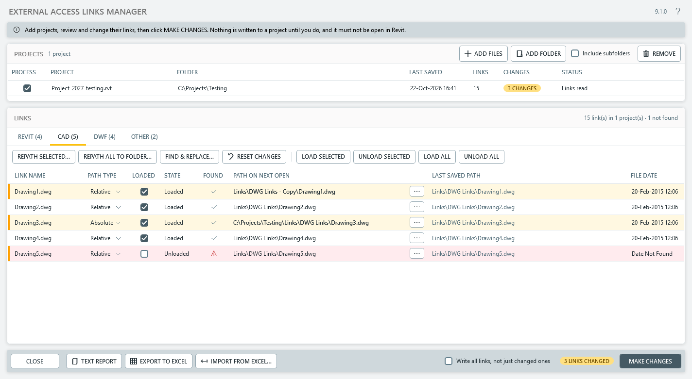
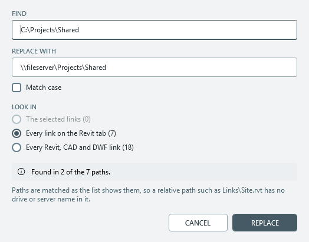

Overview
External Access Links Manager shows the links in Revit project files without opening them. Add one project, several, or a folder of them, and it lists every Revit, CAD, DWF and other link with its path, path type and load state.
From there you can re-path links, one at a time, several at once or all of a type to one folder, and set each to load or unload. The changes are written into the project files and take effect the next time each is opened. You can also save a text or Excel report of every link, with or without making changes.
Getting started
- Open Revit. No project needs to be open.
- On the Add-Ins tab, find the MRD Tools panel and click Links Manager.
- Add the projects to work on, as described under Projects. Their links are read straight away.
- Review and change the links, then click MAKE CHANGES.

Projects
- ADD FILES picks one or more Revit projects (
.rvt). - ADD FOLDER adds every project in a folder. Tick Include subfolders first to include the folders inside it, but expect a large folder tree to take a while. Backup files such as
name.0001.rvtare left out. - You can also drop
.rvtfiles or folders onto the window. - REMOVE takes the selected projects, and their links, off the list.
Each project's links are read as it's added. A project that's already in the list isn't added again.
| Column | Shows |
|---|---|
| Process | Whether the project's links are shown below and written by MAKE CHANGES. Clear it to set a project aside without removing it. |
| Project, Folder | The project file and the folder it's in |
| Last Saved | When the project file was last saved |
| Links | How many links it has |
| Changes | How many of its links you've changed and not yet written |
| Status | Whether its links were read, or why not, and after MAKE CHANGES, what was written. A project with Process cleared shows "Not processed". One that couldn't be read is marked with a warning and isn't processed. |
With one project in the list, the window works as the single-project tool did, and the links list drops its Project column.
Reading the links
The links are split across four tabs, Revit, CAD, DWF and Other, each with a count. Other holds things such as keynote tables, and its links are shown but can't be changed. Each tab has one list, with a row for every link of the projects ticked to Process. Point clouds, coordination models and some other kinds of link aren't listed: see Which links are listed.
| Column | Shows |
|---|---|
| Project | The project the link belongs to (only with more than one project) |
| Link Name | The linked file's name. A lock means the link can't be changed here: it's a Revit Server model, or a link made from an IFC file, which Revit manages through the IFC link. Hover over the lock to see which, and change these links in Revit's Manage Links. |
| Path Type | Relative or Absolute, chosen from a list as in Revit's Manage Links (see Relative or absolute) |
| Loaded | Whether Revit will load the link the next time the project opens |
| State | Loaded, Unloaded or NotFound (in red: Revit couldn't find the file when the project was last saved) |
| Found | Whether the path on next open finds a file now: a tick if it does, a red warning if it doesn't, and a dash for a Revit Server model, which isn't looked for. It's looked for again whenever you change the path. Hover over it to see the full path that was looked for. It's looked for from this computer, so a drive mapped differently on another computer can give a different answer. |
| Saved In | On the Revit tab: the Revit version the linked model was saved in, and whether it's a central model or a local copy. A local copy is in amber: link the central model instead, so the link shows everyone's saved work. A version later than this Revit is in red, as it won't load. It's read from the file without opening it, once the file is found. Hover over it for more. |
| Path on Next Open | The path Revit will use the next time the project opens. This is the one you change. |
| Last Saved Path | The path when the project was last saved. For a Relative link it's relative to the project, as in Revit's Manage Links; otherwise it's the full path. |
| File Date | When the linked file was last saved, or "Date Not Found" if it can't be found |
A link you've changed gets an amber row with a bar at its left edge, and a changed path is shown in bold. A link whose file isn't found gets a red row instead, keeping the amber bar if you've changed it. Click a column heading to sort by it: the Found heading brings the links whose files weren't found to the top, and the count above the list says how many there are. Hover over a path to see all of it.
Which links are listed
The Links Manager reads and changes a project's links without opening it, from the list of links Revit keeps in the project file for this (its transmission data). Revit only keeps some kinds of link there, so some of the tabs in its Manage Links dialog have no match here. Links that aren't listed can only be seen and changed with the project open, in Manage Links.
| Manage Links tab | In the Links Manager |
|---|---|
| Revit | The Revit tab. Revit Server models are listed with a lock, and can't be changed here. Cloud models on BIM 360 or Autodesk Docs aren't listed (see Cloud links). |
| IFC | The Revit tab, as the Revit link Revit makes from each IFC file (name.ifc.rvt), with a lock. Change the IFC link itself in Manage Links. |
| CAD Formats | The CAD tab |
| DWF Markups | The DWF tab |
| Point Clouds | Not listed |
| Topography | Not listed |
| Coordination Model | Not listed: neither Navisworks .nwc and .nwd files, nor Autodesk Docs views |
| PDF, Images | Not listed |
The Other tab shows references that aren't on Manage Links' tabs: the project's keynote table and assembly code table, rendering decals, and systems analysis reports. They're shown as last saved, and not changed.
Making changes
Nothing is written to a project until you click MAKE CHANGES.

Load or unload links
- Tick or clear a link's Loaded checkbox.
- Select several rows and click LOAD SELECTED or UNLOAD SELECTED.
- Click LOAD ALL or UNLOAD ALL for every link on the tab.
Re-path links
- Click the … button at the end of a link's path to pick its new file.
- Double-click a path, or select it and press F2, to type a new one. Press Enter to keep it, or Esc to cancel.
- Select several rows and click REPATH SELECTED… to point them at the files of the same name in another folder.
- Click REPATH ALL TO FOLDER… to do the same for every link on the tab.
- Click FIND & REPLACE…, or press Ctrl+H, to change part of many paths at once, such as an old server or folder name. Choose whether to look in the selected links, every link on the tab, or every Revit, CAD and DWF link; it says how many of their paths contain the text before you replace it. Paths are matched as the list shows them, so a relative path has no drive or server name to replace. Match case is off to start with, as Windows paths ignore case.
- Click RESET CHANGES to undo your changes to the selected links, or to every link on the tab if none are selected. Links go back to what the project holds: as they were read, or as you last wrote them with MAKE CHANGES.
When you re-path a link, set it to Loaded as well, so Revit picks up the new file when the project opens. Check its Found column too: a red warning means the new path doesn't find a file.

Relative or absolute
Choose Relative or Absolute from a link's Path Type list, as in Revit's Manage Links. Its path is converted to match: a relative path is worked out from the project's folder. Re-pathing keeps a link's path type, so a Relative link gets a relative path to its new file.
A file on a different drive or network share from the project has no relative path, so its link can only be Absolute. Re-pathing a Relative link to one makes it Absolute, and choosing Relative for it says why it can't be changed. Typing a path sets the type too: a full path makes the link Absolute, and a relative one makes it Relative.
Make changes or close
The badge beside MAKE CHANGES counts the links you've changed. Click MAKE CHANGES to write the links of every project ticked to Process. It first lists how many links it will write to each project and asks you to confirm. If any of those links point at files that weren't found, it says so, and the question defaults to No. Afterwards, a summary says how many projects were changed and how many had nothing to write, and lists any that couldn't be changed; each project's Status says the same.
Only the links you've changed are written, so a project with no changes is left exactly as it is. Tick Write all links, not just changed ones to write every Revit, CAD and DWF link instead (see Important notes). For a record of the result, use TEXT REPORT or EXPORT TO EXCEL afterwards.
CLOSE leaves without writing anything. If you've changed links that haven't been written, it asks first.
Reports
TEXT REPORT and EXPORT TO EXCEL list every link of the projects ticked to Process, both as last saved and as it will be when each project next opens. You can run them before or after making changes; neither changes the projects.
- The text file is tab-delimited and opens in your default text editor. With more than one project, it has a project name column.
- The Excel workbook has one Links sheet, laid out like the window's list: each link's Path on Next Open beside its Last Saved Path, with Link Id, Link Type, Path Type and Link State columns and filters on every column. Changed links are marked in the Changed column and highlighted in amber. Its suggested name starts with the date and time, then the project's name, such as
23.10.2026 11-05_links_Riverside - Central.xlsx, or_links_multiple projectsfor more than one. Save it as a new file: it won't overwrite an existing one.
Edit in Excel and import
To change many links in Excel, export them, edit the workbook's Path on Next Open, Path Type or Link State columns, save it, and click IMPORT FROM EXCEL…. The changes are made in the window as if you'd made them there: highlighted, ready for MAKE CHANGES, and undone by RESET CHANGES. Nothing is written to the projects until you click MAKE CHANGES. A summary says what changed and what was left out.
- Rows are matched to links by project and Link Id, so leave those as they are. Columns can be moved, and rows sorted or filtered.
- Only projects in the list are changed, so add any others first.
- A Path Type you change is applied after the path. If you leave it as it was, the path decides it, as when you type a path: a full path makes the link Absolute, and a relative one Relative.
- Links that can't be changed here (Other, Revit Server and IFC links) are left out.
- Save the workbook in Excel first. It's read as it was last saved, even while Excel has it open.
Important notes
Workshared projects. Changing a workshared project sets it to a transmitted state. The next time it opens, Revit asks whether to save it as a central model in its current location, or to work with it temporarily.
Cloud links. Links to cloud models on BIM 360 or Autodesk Docs aren't listed. Revit only keeps links to files and Revit Server models where they can be read without opening the project, so cloud links can only be seen and changed in Revit's Manage Links. If you're saving a cloud model down to a local or network folder, repath its links in Revit first, while the model is still in the cloud, so the saved copy points at the files you want. This tool can then manage those links.
Moving a project with its links. If you'll move the project and its linked files to another folder after making changes, tick Write all links, not just changed ones before you click MAKE CHANGES. Make Changes sets the project to a transmitted state, and when it next opens, relative links that weren't written may not be found from the new folder.
- A project must not be open in Revit, by you or anyone else, when you click MAKE CHANGES.
- Changes take effect the next time the project is opened. Until then, Revit uses the links as last saved.
- For a workshared project, add the central model, not a local copy: Revit works out relative paths from the central model's folder.
- Revit Server models, and Revit links made from IFC files, are listed with a lock and can't be changed here. They're never written, even with Write all links, not just changed ones ticked. Change them in Revit's Manage Links.
- Each dialog starts where you last used it, even after Revit closes. ADD FILES and ADD FOLDER start where you last added projects. Repathing starts where the link points now, or where you last repathed to. The Excel export starts where you last saved one, or the first time, beside the project. The folders are kept in
%LOCALAPPDATA%\Mike Richardson Design\External Access Links Manager\Settings.txt.
Install and uninstall
Run LinksManager-<version>-Setup.exe from the latest release. It installs for you only, needs no admin rights, and covers every Revit year from 2024 to 2027, in the folder Revit reads at start-up.
- The setup isn't digitally signed, so Windows SmartScreen warns about an unknown publisher. Choose More info, then Run anyway.
- The first time each Revit year loads the add-in, Revit asks whether to load it. Choose Always Load.
- If the add-in is already installed for all users on the computer, the setup stops, because Revit would refuse a second copy.
To install without a setup, close Revit and unzip External Access Links Manager.bundle.zip into %APPDATA%\Autodesk\ApplicationPlugins.
To uninstall, close Revit and remove External Access Links Manager from Settings › Apps.
Version history
| Version | Changes |
|---|---|
| 9.1.0 | One window, opened from a single Links Manager button, replaces the separate single-project and batch tools: add projects one at a time, from a folder or by dropping them on the window, and their links are read straight away. Each tab has one list showing the path on next open beside the last saved path, each link's path type is chosen from a list as in Revit's Manage Links, changed links are highlighted, and CLOSE asks before leaving changes unwritten. The Excel export lists every link on one sheet, like the window, and suggests a dated file name. Dialogs remember their folders between sessions, and every Revit year gets the same modern Windows folder picker. One install covers Revit 2024–2027, from a new setup that needs no admin rights. The files Excel export needs are now included for Revit 2025 and 2026. Fixes opening the text report and Excel file on Revit 2025 and later, message box titles, relative re-pathing to another drive or network share, and the batch summary, which now lists any project that couldn't be changed. Make Changes writes only the links you've changed, and leaves a project with none untouched; a new Write all links, not just changed ones option writes every link, so relative links keep working when a project is moved along with its linked files. Clearing Is Loaded on a link Revit couldn't find now unloads it, and a link's state updates as soon as its checkbox is clicked. A link's path type always matches its path: a Relative link given a full path (on another drive or share, or typed in) is written as Absolute, rather than as Relative with a full path. Relative CAD links, which Revit hands over with their full path, are shown and written relative to the project. FIND & REPLACE… changes part of many paths at once, a Found column shows whether each link's file is there, and MAKE CHANGES lists what it will write and asks first. A Saved In column shows each Revit link's version and whether it's a central model or a local copy, and IMPORT FROM EXCEL… brings edits back from an exported workbook. Revit Server and IFC links are listed with a lock, and are never written. The window opens larger when the screen allows. |
| 9.0.0 | Updated to work with Revit 2024 |
| 8.0.0 | Updated to work with Revit 2023 |
| 7.0.0 | Updated to work with Revit 2022 |
| 6.0.0 | Updated to work with Revit 2021 |
| 5.0.0 | Updated to work with Revit 2020 |
| 4.0.0 | Updated to work with Revit 2019. Added Excel export; re-path, load and unload by selecting several rows; batch tool: check and uncheck files by selecting several rows, and a Search Subdirectories option; resizable split panels; relative re-pathing when the path type is Relative. |
| 3.0.0 | Updated to work with Revit 2018. Added the batch tool, to process every Revit project in a folder, and the Load All / Unload All checkboxes. |
Contact
Mike Richardson Design · www.mikerichardsondesign.com · mike@mikerichardsondesign.com